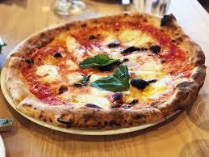

La pizza es un plato de origen italiano que consiste en una base de masa de pan, generalmente redonda y plana, cubierta con salsa de tomate, queso y diversos ingredientes como carnes, verduras y especias. Es uno de los alimentos más populares a nivel mundial, con una historia que se remonta a la antigua Roma y que ha evolucionado a lo largo de los siglos para convertirse en un ícono culinario global.
Los ingredientes básicos de una pizza incluyen una base de masa de pan, salsa de tomate y queso. Sin embargo, las opciones de ingredientes son prácticamente infinitas e incluyen carnes como pepperoni, jamón y salchichas; verduras como pimientos, cebollas y champiñones; y otros toppings como aceitunas, piña y albahaca. La variedad de ingredientes permite personalizar la pizza según los gustos individuales.
Para preparar una pizza casera, primero se debe hacer la masa mezclando harina, agua, levadura, sal y aceite de oliva, y luego dejarla reposar para que leve. Después, se extiende la masa en una bandeja para hornear, se cubre con salsa de tomate, queso rallado y los ingredientes deseados. Finalmente, se hornea a alta temperatura (alrededor de 220°C) durante 10-15 minutos o hasta que la masa esté dorada y el queso burbujeante.